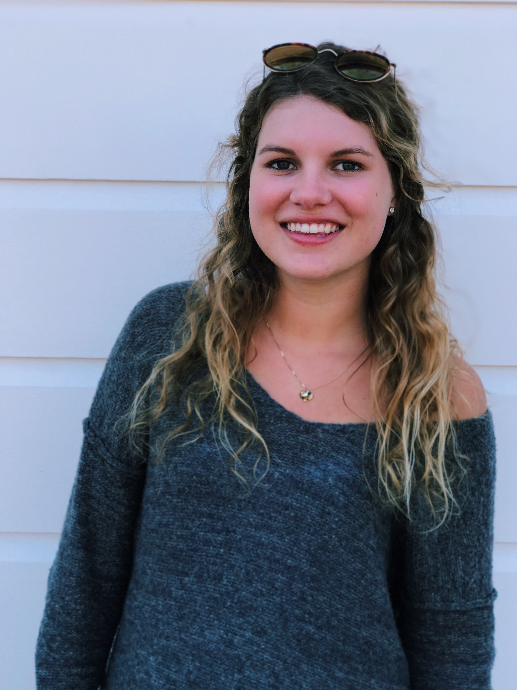

About Me

Hi, my name is Frida. I'm a first year at UC Berkeley, intending to major in Business Administration and Media Studies. One of my greatest passions is writing, and I try to get involved in as much journalism as I can. In high school I was editor in chief of an Arts and Culture Magazine, called C Magazine. Since coming to college, I have gotten involved in The Daily Californian and am now an avid writer for its Weekender section. Apart from writing I enjoy reading, designing, drinking coffee, watching Netflix, hiking, and travelling.